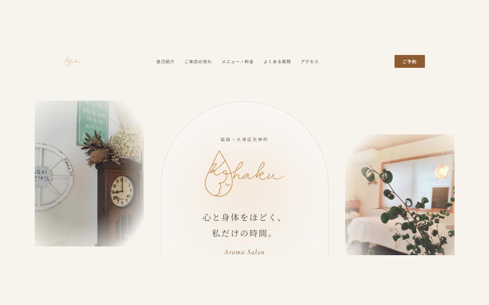

ホームページ制作
スマホで見やすい店舗・事業サイト。メニューや写真、文章をご自身で直せる管理画面つきにも対応します。
電話・DM・LINEで届く予約を、手帳やメモで管理していて漏れが心配。
メニューや写真を変えたくても、自分では更新できない。
アカウントは作ったけれど、あいさつも案内も手つかず。
転記や下調べなど、決まった作業に時間を取られている。
バラバラに頼むと噛み合わない WEB・予約・LINE を、ひとつの流れとして設計します。作って終わりにせず、運用まで伴走します。
スマホで見やすい店舗・事業サイト。メニューや写真、文章をご自身で直せる管理画面つきにも対応します。
空き枠の表示から予約受付、確認メール、前日までのリマインド、メニュー・クーポン・顧客を扱う管理画面まで。
あいさつメッセージ・キーワード応答・リッチメニューの設計、Lステップとの連携、予約システムとのLINE連携。
帳票の読み取りやリサーチ、文面づくりなど、毎日の決まった作業をAIで軽くするツールを作ります。
実際に作って公開しているものです。リンク先で動きを確かめられます。

CASE 01 ／ ホームページ・予約・LINE
姫路の女性専用・完全予約制サロンの、集客と予約まわりを一式で手がけています。
CASE 02 ／ LINE
LINE公式アカウントとLステップの連携を構築しました。お客様のご希望により、事業者名は伏せています。
TOOL ／ AI
画像・PDFの読み取り範囲を指定すると、AIが文字やチェック欄を判定してCSVに。Excel台帳への転記まで支援します。
触ってみる ↗TOOL ／ AI
案件の進捗管理、提案・フォロー文の作成、Web検索を使った相手先リサーチ（情報源リンク付き）。
触ってみる ↗TOOL ／ 業務
管理項目を自由に決めて、複数の台帳を一つの画面で。検索・並び替え・CSV出力・印刷に対応し、データは端末内に保存。
触ってみる ↗LINEかフォームで、今のお店の状況や困りごとをお聞かせください。
何を作り、何を今のまま残すかを整理して、進め方を具体的にお伝えします。
サイト・予約・LINE・ツールを作ります。途中経過はこまめに共有します。
実際に使っていただきながら、使いにくいところを一緒に直していきます。
内容や進め方はご相談のうえでご提案します。「まだ何を頼めばいいか分からない」段階でも大丈夫です。